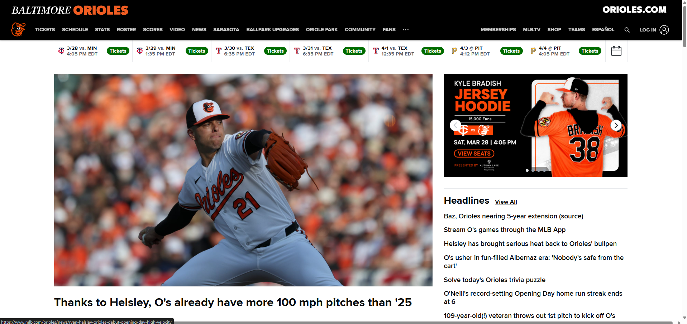

Official Baltimore Orioles Website

Baseball fans, specifically Orioles fans that are trying to find gametimes, scores, and news for the team.
MLB uses hierarchial organization, meanign the homepage is the hub with nav links that lead to schedules, rosters, updates, and scores with their own sub-pages.
This site uses contrast, repetition, and proximity.
This site scored a 35% on the accessibility checker. It also had 174 critical issue found which makes it not compliant and at risk of accessibility lawsuits.
This site is very effective for what it was made for. Users can find the schedule, tickets, and news very easily.
This site is efficient, showing the schedule on the homepage with buttons to buy tickets making it just two clicks in order to buy them.
This site is very engaging due to its orange and black colors that match perfectly. There are also huge images of players, and engaging videos that make the site more pleasing.
The biggest recommendation would be to improve the accessibility. There are 174 critical issues and a 35% score. This could lead to diabled people having problems with accessing certain parts of the site.